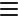

Загрузка читалки...

Загрузка...
Прочтено:
0%
Настройки
Шрифт
Lato (по умолчанию)
Antiqua
Liberation Sans
Liberation Serif
Roboto
Source Code Pro
Whitney
Размер шрифта:
16px
Ширина текста
Ширина:
800px
Цвета
Фон
Текст
Светлая
Тёмная
Межстрочный интервал
Интервал:
1.6
Плотный
Стандарт
Просторный
Воздушный